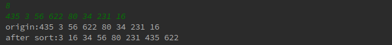

<!DOCTYPE html>
<html lang class="loading">
<head><meta name="generator" content="Hexo 3.8.0">
    <meta charset="UTF-8">
    <meta http-equiv="X-UA-Compatible" content="IE=edge,chrome=1">
    <meta name="viewport" content="width=device-width, minimum-scale=1.0, maximum-scale=1.0, user-scalable=no">
    <title>基础算法-分治 - Linco</title>
    <meta name="apple-mobile-web-app-capable" content="yes">
    <meta name="apple-mobile-web-app-status-bar-style" content="black-translucent">
    <meta name="google" content="notranslate">
    <meta name="keywords" content="Linco, Blog,"> 
    <meta name="description" content="想要系统学习, 推荐阅读分类文章列表
​    
相关文章
​    基础算法-贪心
​    基础算法-动态规划
​    基础算法-回溯
​    基础算法-分支界限
​    
分治, 意思就,"> 
    <meta name="author" content="Linco"> 
    <link rel="alternative" href="atom.xml" title="Linco" type="application/atom+xml"> 
    <link rel="icon" href="/img/icon.png"> 
    <link rel="stylesheet" href="//cdn.jsdelivr.net/npm/gitalk@1/dist/gitalk.css">
    <link rel="stylesheet" href="/css/diaspora.css">

</head>
</html>
<body class="loading">
    <span id="config-title" style="display:none">Linco</span>
    <div id="loader"></div>
    <div id="single">
    <div id="top" style="display: block;">
    <div class="bar" style="width: 0;"></div>
    <a class="icon-home image-icon" href="javascript:;" data-url></a>
    <div title="播放/暂停" class="icon-play"></div>
    <h3 class="subtitle">基础算法-分治</h3>
    <div class="social">
        <!--<div class="like-icon">-->
            <!--<a href="javascript:;" class="likeThis active"><span class="icon-like"></span><span class="count">76</span></a>-->
        <!--</div>-->
        <div>
            <div class="share">
                <a title="获取二维码" class="icon-scan" href="javascript:;"></a>
            </div>
            <div id="qr"></div>
        </div>
    </div>
    <div class="scrollbar"></div>
</div>

    <div class="section">
        <div class="article">
    <div class="main">
        <h1 class="title">基础算法-分治</h1>
        <div class="stuff">
            <span>五月 09, 2019</span>
            
  <ul class="post-tags-list"><li class="post-tags-list-item"><a class="post-tags-list-link" href="/tags/java/">java</a></li><li class="post-tags-list-item"><a class="post-tags-list-link" href="/tags/基础算法/">基础算法</a></li><li class="post-tags-list-item"><a class="post-tags-list-link" href="/tags/算法竞赛基础/">算法竞赛基础</a></li></ul>


        </div>
        <div class="content markdown">
            <p>想要系统学习, 推荐阅读<a href="/tag/算法竞赛基础">分类文章列表</a></p>
<p>​    </p>
<p>相关文章</p>
<p>​    基础算法-贪心</p>
<p>​    基础算法-动态规划</p>
<p>​    基础算法-回溯</p>
<p>​    基础算法-分支界限</p>
<p>​    </p>
<p>分治, 意思就是“分而治之”，<strong>把一个复杂的问题分割成多个类似的小问题</strong>，甚至把小问题进一步分割并递归下去, 直到<strong>小问题可以被简单的解决</strong>，然后把小问题的答案按分割的<strong>反向进行合并</strong>, 得到问题的解决方案</p>
<p>​    </p>
<p>所以, 分支算法适用于满足下述全部条件的问题场景</p>
<ol>
<li><p>问题可以细化分割成模式相同的多个小问题</p>
</li>
<li><p>小问题可解或可满足条件1</p>
</li>
<li><p>全部小问题最终可解</p>
</li>
</ol>
<p>​    </p>
<p>经典的归并排序用的就是分治思想</p>
<p>归并的过程是指把两组事物合二为一. 归并排序的算法, 把待排序的数字视为单个成组(这里简化排序对象为数字, 数据存储结构为数组, 下同), 每两组按顺序两两合并. 合并的结果再进一步和另一组结果合并, 最终得到有序序列</p>
<p>​    </p>
<p>回头看分治的思想, 归并排序和思想对应的关系是</p>
<ul>
<li>复杂的问题: 所有数字的的排序 (复杂 ????????)</li>
<li>小问题: 分组后一组数字的排序</li>
<li>可以简单解决的小问题: 一个数字的排序</li>
<li>合并小问题结果: 两个组结果合并</li>
</ul>
<p>分治算法需要编程的地方在</p>
<ol>
<li>小问题解决</li>
<li>结果的合并</li>
</ol>
<p>最终代码如下: </p>
<figure class="highlight plain"><table><tr><td class="gutter"><pre><span class="line">1</span><br><span class="line">2</span><br><span class="line">3</span><br><span class="line">4</span><br><span class="line">5</span><br><span class="line">6</span><br><span class="line">7</span><br><span class="line">8</span><br><span class="line">9</span><br><span class="line">10</span><br><span class="line">11</span><br><span class="line">12</span><br><span class="line">13</span><br><span class="line">14</span><br><span class="line">15</span><br><span class="line">16</span><br><span class="line">17</span><br><span class="line">18</span><br><span class="line">19</span><br><span class="line">20</span><br><span class="line">21</span><br><span class="line">22</span><br><span class="line">23</span><br><span class="line">24</span><br><span class="line">25</span><br><span class="line">26</span><br><span class="line">27</span><br><span class="line">28</span><br><span class="line">29</span><br><span class="line">30</span><br><span class="line">31</span><br><span class="line">32</span><br><span class="line">33</span><br><span class="line">34</span><br><span class="line">35</span><br><span class="line">36</span><br><span class="line">37</span><br><span class="line">38</span><br><span class="line">39</span><br><span class="line">40</span><br><span class="line">41</span><br><span class="line">42</span><br><span class="line">43</span><br><span class="line">44</span><br><span class="line">45</span><br><span class="line">46</span><br><span class="line">47</span><br><span class="line">48</span><br><span class="line">49</span><br><span class="line">50</span><br><span class="line">51</span><br><span class="line">52</span><br><span class="line">53</span><br><span class="line">54</span><br><span class="line">55</span><br><span class="line">56</span><br><span class="line">57</span><br><span class="line">58</span><br><span class="line">59</span><br><span class="line">60</span><br><span class="line">61</span><br><span class="line">62</span><br><span class="line">63</span><br><span class="line">64</span><br><span class="line">65</span><br><span class="line">66</span><br><span class="line">67</span><br><span class="line">68</span><br><span class="line">69</span><br><span class="line">70</span><br><span class="line">71</span><br><span class="line">72</span><br></pre></td><td class="code"><pre><span class="line">package com.linco._分治;</span><br><span class="line"></span><br><span class="line">import java.util.Scanner;</span><br><span class="line"></span><br><span class="line">public class Resolve &#123;</span><br><span class="line"></span><br><span class="line">    /*</span><br><span class="line">     * 基于归并思想, 实现的方法有多种, 这里用了空间小, 效率高, 但隔离性差的方法</span><br><span class="line">     */</span><br><span class="line">    private int[] arr;</span><br><span class="line"></span><br><span class="line">    private void input()&#123;</span><br><span class="line">        Scanner scanner = new Scanner(System.in);</span><br><span class="line">        int len = scanner.nextInt();</span><br><span class="line">        arr = new int[len];</span><br><span class="line">        for (int i=0;i&lt;len;i++)</span><br><span class="line">           arr[i]=scanner.nextInt();</span><br><span class="line">    &#125;</span><br><span class="line"></span><br><span class="line">    private void output()&#123;</span><br><span class="line">        for (int value : arr) System.out.printf(&quot;%d &quot;, value);</span><br><span class="line">    &#125;</span><br><span class="line"></span><br><span class="line">    private void range(int start, int end) &#123; // end 不含, 符合数组规则, 减少很多+1-1</span><br><span class="line">        if (end &lt;= start + 1)</span><br><span class="line">            return;</span><br><span class="line">        int[] temp = new int[end - start];</span><br><span class="line">        int mid = (start+end+1) / 2; // mid 归属后者</span><br><span class="line"></span><br><span class="line">        range(start, mid);</span><br><span class="line">        range(mid, end);</span><br><span class="line"></span><br><span class="line">        // 合并结果到temp</span><br><span class="line">        int i = 0, start_i = start, end_i = mid;</span><br><span class="line">        while (start_i &lt; mid &amp;&amp; end_i &lt; end) &#123;</span><br><span class="line">            if (arr[start_i] &gt; arr[end_i]) &#123;</span><br><span class="line">                temp[i] = arr[end_i];</span><br><span class="line">                end_i++;</span><br><span class="line">            &#125; else &#123;</span><br><span class="line">                temp[i] = arr[start_i];</span><br><span class="line">                start_i++;</span><br><span class="line">            &#125;</span><br><span class="line">            i++;</span><br><span class="line">        &#125;</span><br><span class="line">        while (start_i &lt; mid)</span><br><span class="line">            temp[i++] = arr[start_i++];</span><br><span class="line">        while (end_i &lt; end)</span><br><span class="line">            temp[i++] = arr[end_i++];</span><br><span class="line"></span><br><span class="line">        // 复制temp覆盖分组</span><br><span class="line">        i = 0;</span><br><span class="line">        start_i = start;</span><br><span class="line">        while (start_i &lt; end)</span><br><span class="line">            arr[start_i++] = temp[i++];</span><br><span class="line">    &#125;</span><br><span class="line"></span><br><span class="line"></span><br><span class="line">    public static void main(String[] args) &#123;</span><br><span class="line">        Resolve resolve = new Resolve();</span><br><span class="line">        resolve.input();</span><br><span class="line"></span><br><span class="line">        System.out.print(&quot;origin:&quot;);</span><br><span class="line">        resolve.output();</span><br><span class="line">        System.out.println();</span><br><span class="line"></span><br><span class="line">        resolve.range(0, resolve.arr.length);</span><br><span class="line"></span><br><span class="line">        System.out.print(&quot;after sort:&quot;);</span><br><span class="line">        resolve.output();</span><br><span class="line">        System.out.println();</span><br><span class="line">    &#125;</span><br><span class="line">&#125;</span><br></pre></td></tr></table></figure>
<p>好像不算很少, 除去输入输出初始化, 核心代码只在range方法, 其实也就几行 </p>
<p>​    </p>
<p>测试运行:</p>
<p></p>
<p>​    </p>
<p>归并排序时间空间效率不及快速排序堆排序等, 如果觉得意义不大就大错特错了. </p>
<p>分治算法天然支持多核并行计算. 实际上, 归并排序效率为O(N*lgN), 属于高效的排序算法, 而在多核条件下, 分治算法实现的归并排序是支持多线程和分布式计算的简单排序算法. 横向扩容足够时, 快速排序等单机单线程算法时间效率上完全没有可比性</p>

            <!--[if lt IE 9]><script>document.createElement('audio');</script><![endif]-->
            <audio id="audio" loop="1" preload="auto" controls="controls" data-autoplay="true">
                <source type="audio/mpeg" src>
            </audio>
            
                <ul id="audio-list" style="display:none">
                    
                        <li title="0" data-url="/music/default_bgm.mp3"></li>
                    
                        <li title="1" data-url="/music/big_fish_piano.mp3"></li>
                    
                </ul>
            
        </div>
        
    <div id="gitalk-container" class="comment link" data-ae="false" data-ci="978518cc439cd352dd0b" data-cs="2d89825e7db6df72d065714d6b4ac1ce1829b14e" data-r="LincoXiaoQ.github.io" data-o="LincoXiaoQ" data-a="LincoXiaoQ" data-d="false">查看评论</div>


    </div>
    
</div>


    </div>
</div>
</body>
<script src="//cdn.jsdelivr.net/npm/gitalk@1/dist/gitalk.min.js"></script>
<script src="//lib.baomitu.com/jquery/1.8.3/jquery.min.js"></script>
<script src="/js/plugin.js"></script>
<script src="/js/diaspora.js"></script>
<link rel="stylesheet" href="/photoswipe/photoswipe.css">
<link rel="stylesheet" href="/photoswipe/default-skin/default-skin.css">
<script src="/photoswipe/photoswipe.min.js"></script>
<script src="/photoswipe/photoswipe-ui-default.min.js"></script>

<!-- Root element of PhotoSwipe. Must have class pswp. -->
<div class="pswp" tabindex="-1" role="dialog" aria-hidden="true">
    <!-- Background of PhotoSwipe. 
         It's a separate element as animating opacity is faster than rgba(). -->
    <div class="pswp__bg"></div>
    <!-- Slides wrapper with overflow:hidden. -->
    <div class="pswp__scroll-wrap">
        <!-- Container that holds slides. 
            PhotoSwipe keeps only 3 of them in the DOM to save memory.
            Don't modify these 3 pswp__item elements, data is added later on. -->
        <div class="pswp__container">
            <div class="pswp__item"></div>
            <div class="pswp__item"></div>
            <div class="pswp__item"></div>
        </div>
        <!-- Default (PhotoSwipeUI_Default) interface on top of sliding area. Can be changed. -->
        <div class="pswp__ui pswp__ui--hidden">
            <div class="pswp__top-bar">
                <!--  Controls are self-explanatory. Order can be changed. -->
                <div class="pswp__counter"></div>
                <button class="pswp__button pswp__button--close" title="Close (Esc)"></button>
                <button class="pswp__button pswp__button--share" title="Share"></button>
                <button class="pswp__button pswp__button--fs" title="Toggle fullscreen"></button>
                <button class="pswp__button pswp__button--zoom" title="Zoom in/out"></button>
                <!-- Preloader demo http://codepen.io/dimsemenov/pen/yyBWoR -->
                <!-- element will get class pswp__preloader--active when preloader is running -->
                <div class="pswp__preloader">
                    <div class="pswp__preloader__icn">
                      <div class="pswp__preloader__cut">
                        <div class="pswp__preloader__donut"></div>
                      </div>
                    </div>
                </div>
            </div>
            <div class="pswp__share-modal pswp__share-modal--hidden pswp__single-tap">
                <div class="pswp__share-tooltip"></div> 
            </div>
            <button class="pswp__button pswp__button--arrow--left" title="Previous (arrow left)">
            </button>
            <button class="pswp__button pswp__button--arrow--right" title="Next (arrow right)">
            </button>
            <div class="pswp__caption">
                <div class="pswp__caption__center"></div>
            </div>
        </div>
    </div>
</div>


</html>
